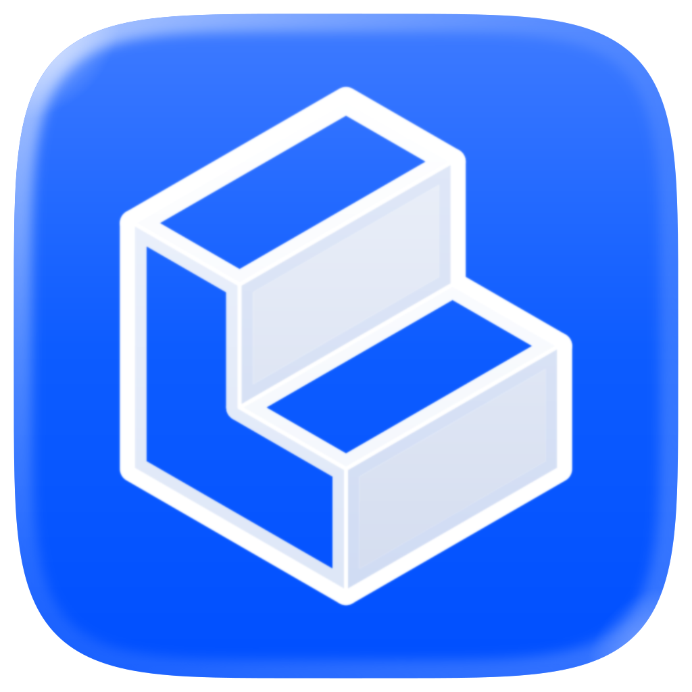
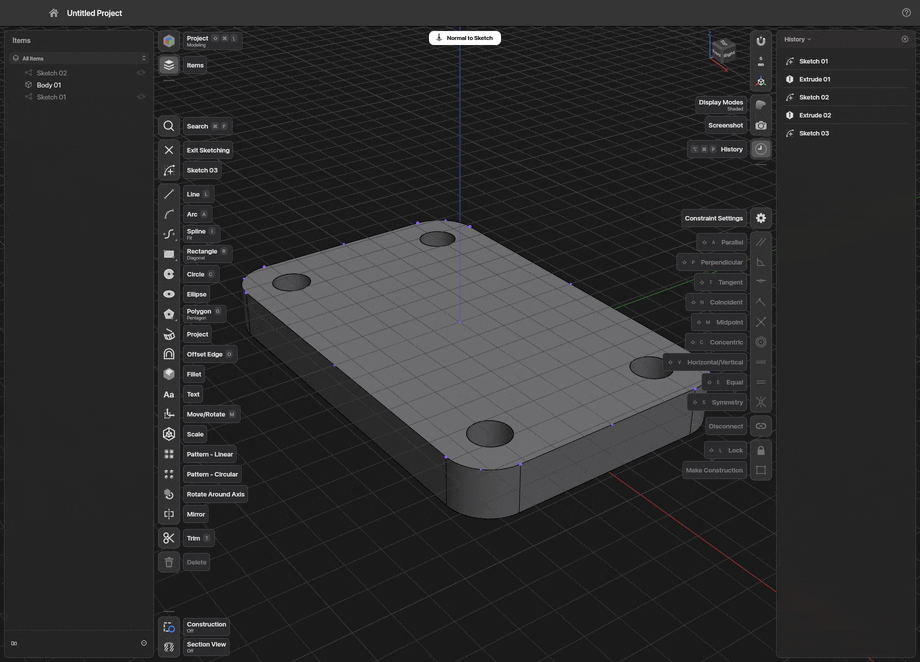
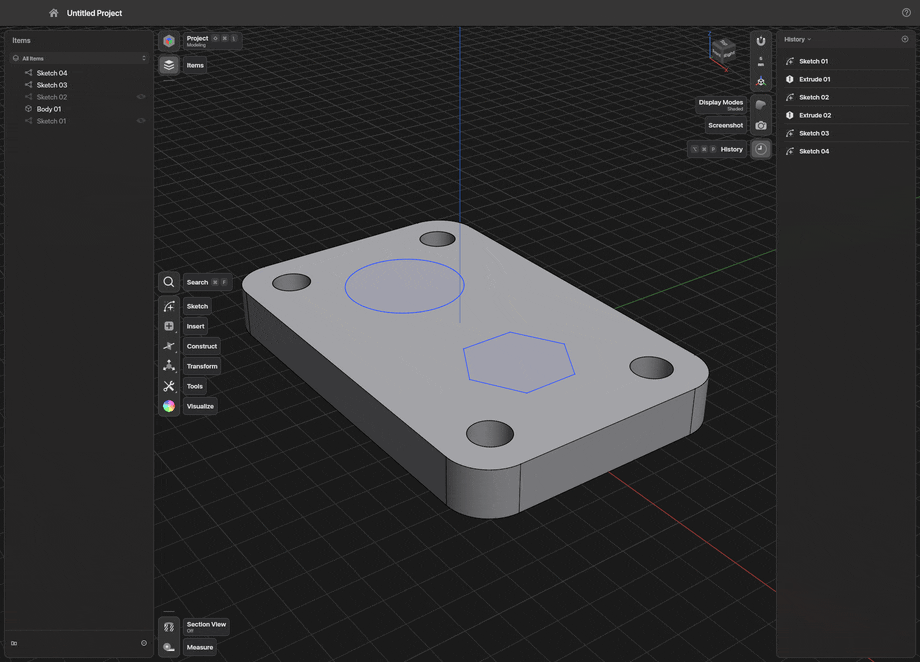
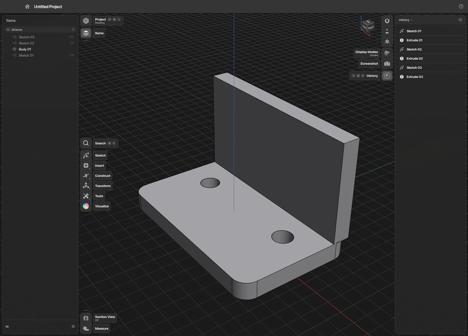
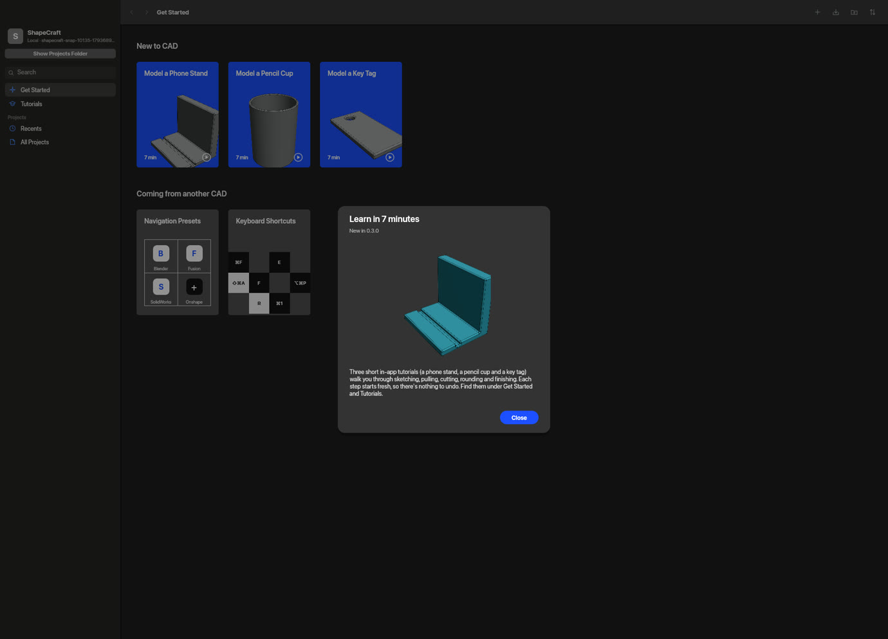
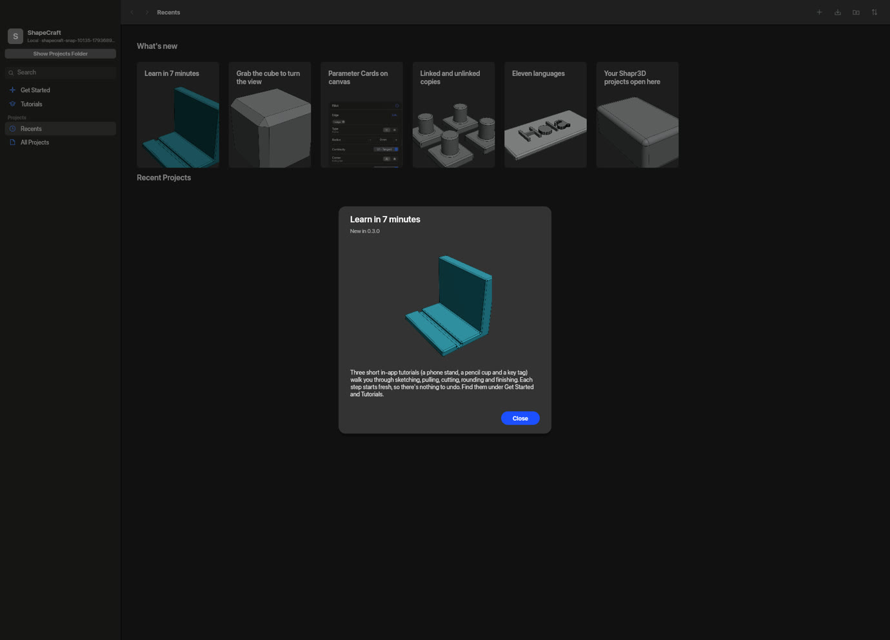
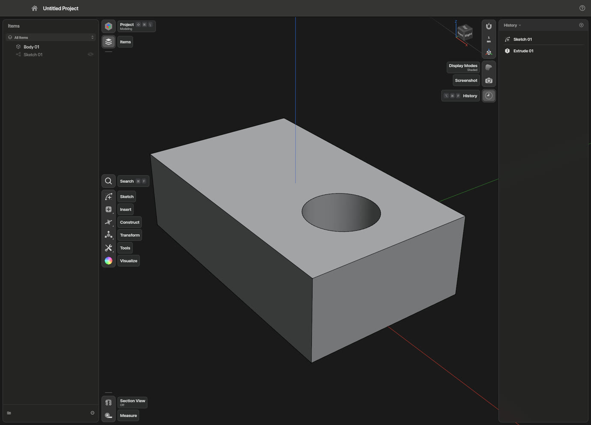
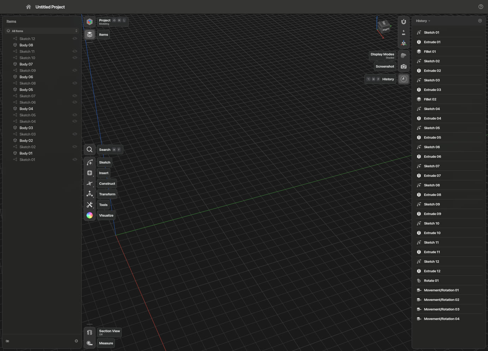
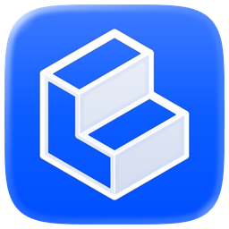

ShapeCraftSketch on any face, pull it into a solid, round the edges, and type a number whenever you like. No account, no cloud, no seat limits.
Press R on the top of a part and drag out a rectangle. Type 28, press Tab, type 20. Snapping, inference and constraints work while you draw, so it moves like a pencil and holds like a drawing.

Every face has a handle. Drag it, drop it onto another face to reach it, or type an exact value. ShapeCraft works out whether to add, cut or start a new body, and the badge lets you overrule it: push a sketch through a part and it cuts, switch the badge to New Body and the cut becomes a part of its own.

Click an edge and drag, and the round follows your hand. Switch to chordal size, setback corners or G2 continuity, or shape the curvature with a slider.

One gizmo moves and turns. Pattern a part around an axis or along a line, and the copies stay linked: turn the original and all eight follow. Or let them go free. Mirror, booleans, split, loft, sweep, revolve and wrap-and-emboss sit on the same toolbar.
Metal on a Mac, Vulkan or DirectX 12 on Windows and Linux, with OpenGL and then the processor as fallbacks, so almost any machine gets a picture. It picks the discrete GPU over the built-in one, lets you choose a card by name, and if a GPU drops out mid-session it saves your work and restarts on another.



Menus, shortcuts, command search, scripts, the CLI, a JSON control channel and a built-in MCP server all call the same command list. Run it headless on a server, or connect to the open app and watch the model being built. The handheld at the top of this page was made that way, one command at a time.
# Headless MCP server on stdio shapecraft-cli mcp # …or drive the open app (started with --control 47811) shapecraft-cli mcp --connect 47811 # One shot: script → project → picture shapecraft-cli run part.jsonl --save out/ --png part.png
Open the files you already have, from .shapr projects to STEP and Parasolid. A project is a folder: a readable project.json with the History, and the bodies as STEP. An imported file is never written over. Drawings go out as PDF, SVG, DXF and DWG.
Download, double-click, model. Everything it needs is inside, and it keeps itself up to date.
What you report from the desktop apps shapes these, so tell us how you use it.
No paid tier, ever. Building it still costs money in test hardware, build machines and development tools. My wife is fairly sure that's where my evenings and our money disappear to. A coffee is the best counter-argument I have. It buys no features and no priority, only more hours on the work.
Can't tip? A star or a good bug report helps as much.
ShapeCraft is built by one applications engineer with more than twelve years in the trade, working with AI coding agents. The agents write much of the code. A person decides what gets built and how it should behave, and checks that it's right: by hand on real parts, with automated tests, on all three operating systems, and side by side with the tools it's measured against. It's clean-room: no code, files or artwork from other CAD products. The command list the agents build it with is the same one the MCP server hands to yours.

Every side of a part is one drag away.

Made in Rust. Free and open source.
Looking down on the page.
Let go, and it snaps back.
Nothing back here but more grid.